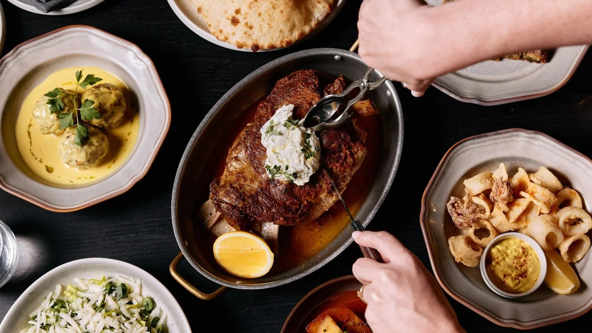
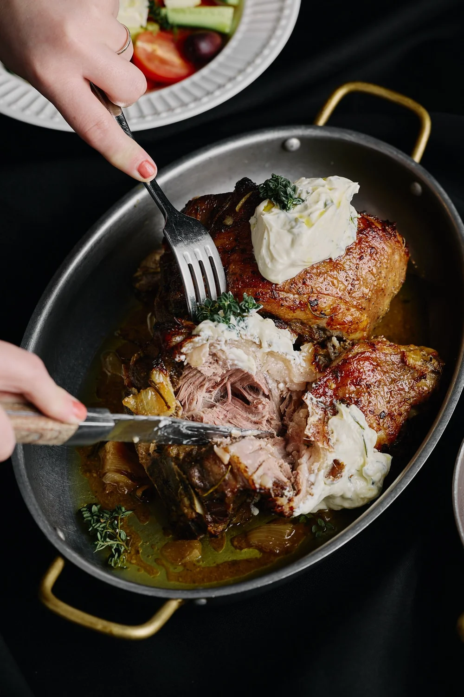

Woodfired Pillow Bread
Thyme, olive oil (DF)
Steakhouse dining built around live fire, late-night reservations, and the after-dark energy of The Terrace at The Star Brisbane.
Private dining is available for intimate groups; keep the booking flow visible for late sittings and function enquiries.


1078 Google reviews
Tap-to-call preserved
Official reservation path retained
The Star Brisbane, The Terrace, Level 4/33 William St, Brisbane City QLD 4000, Australia
The concept keeps the site’s function and private-dining intent visible, instead of flattening everything into a one-page brochure.
The Star Brisbane, The Terrace, Level 4/33 William St, Brisbane City QLD 4000, Australia